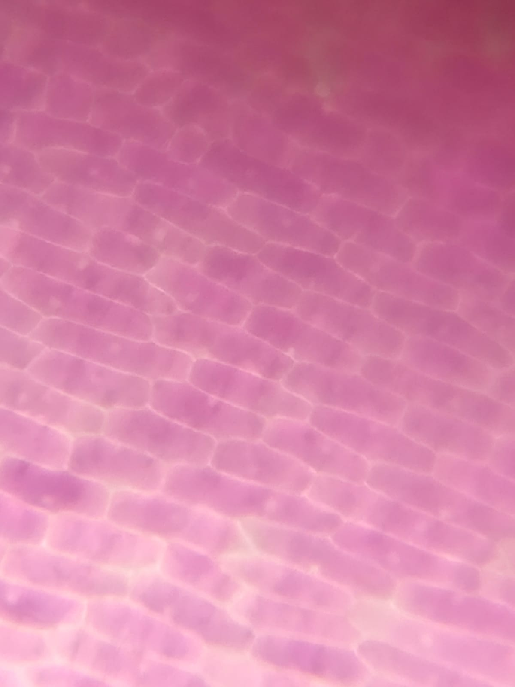
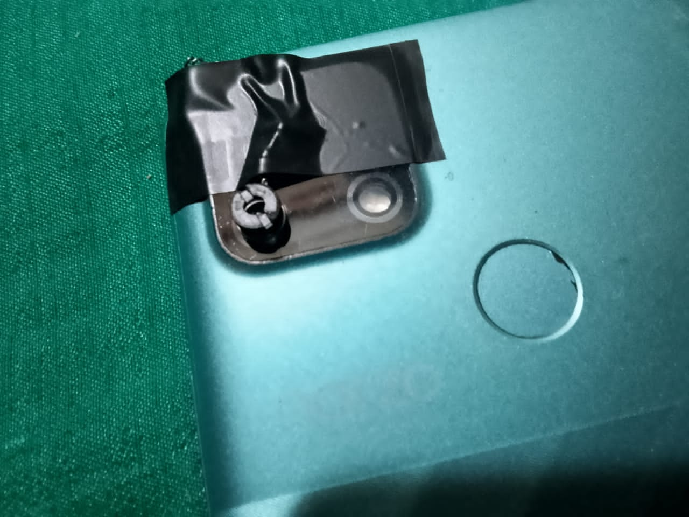
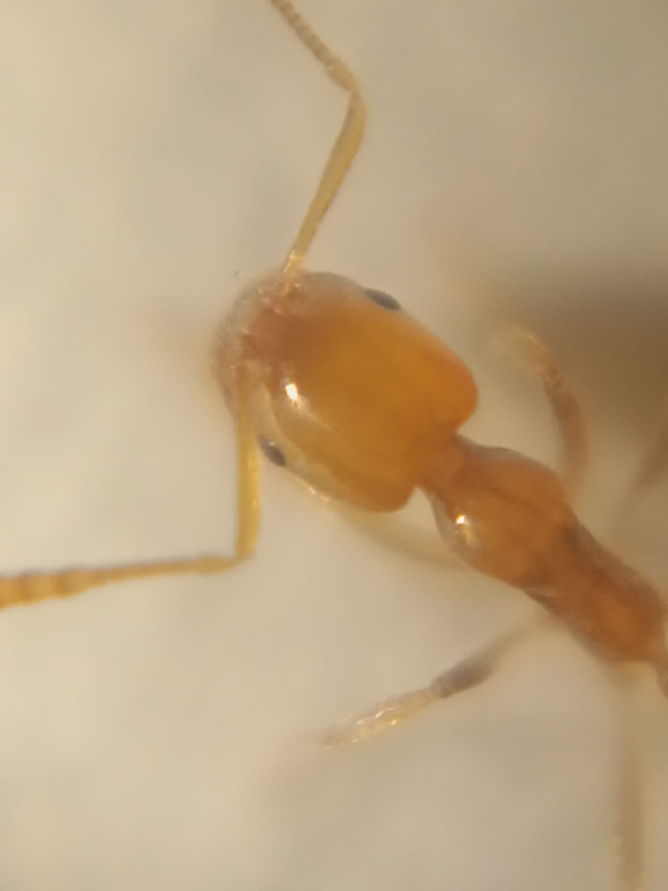
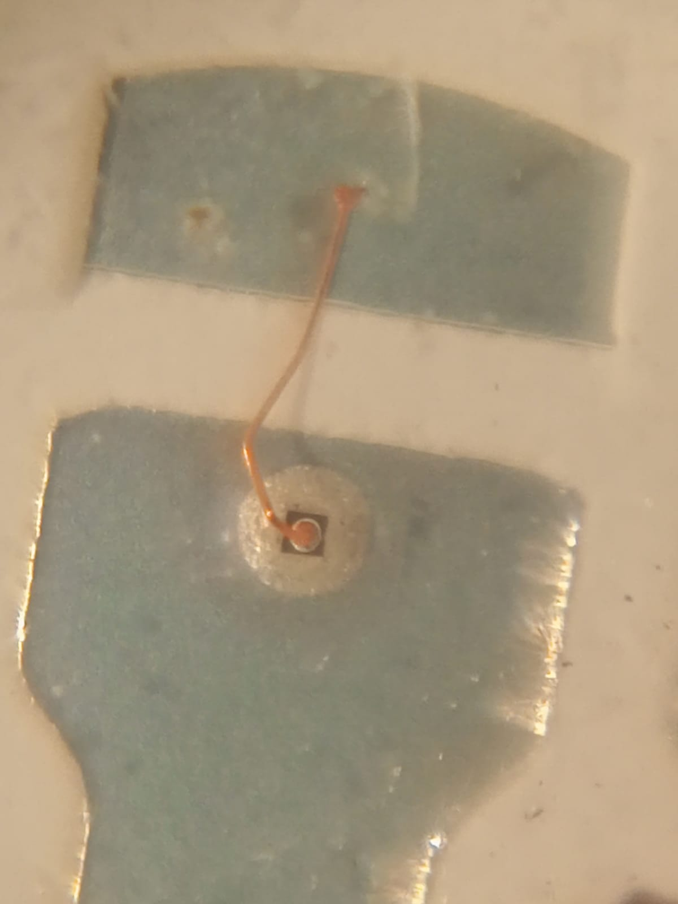
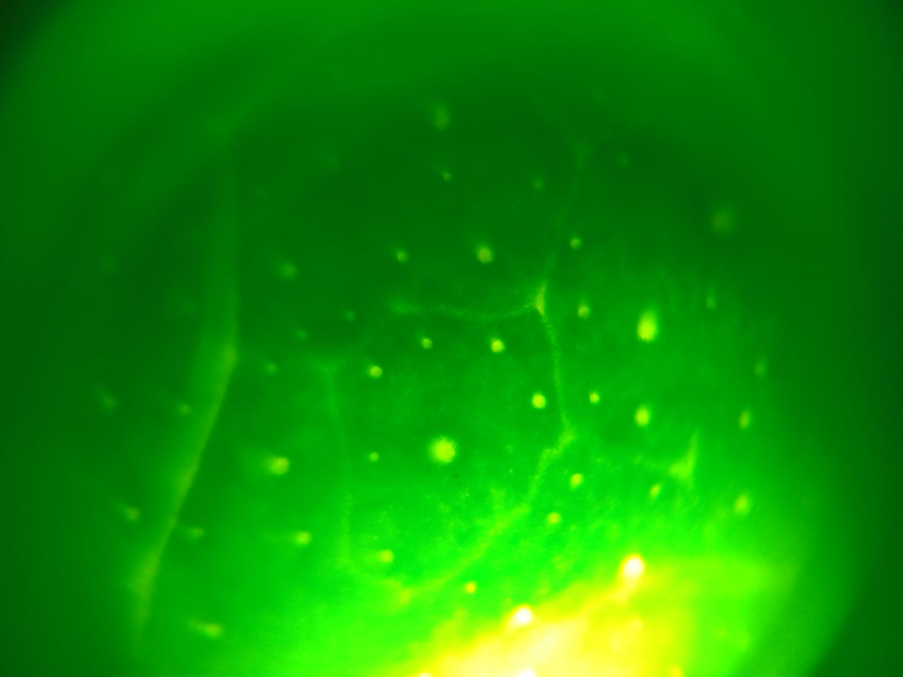
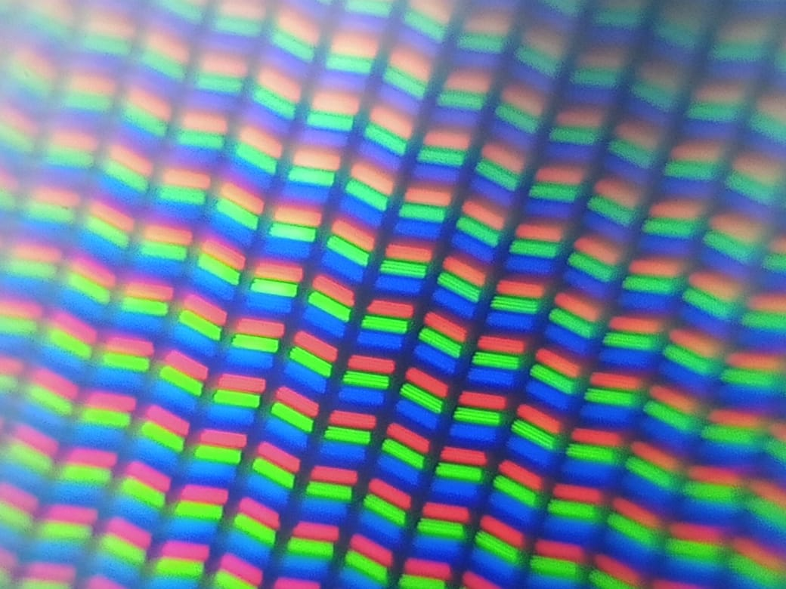

DIY Smartphone Microscope
Introduction
As a hard tech enthusiast and electronics engineer, biology never stops fascinating me too. I have always wanted a microscope that I can use to see the microscopic world around us.
Finding the market options out of my budget I decided to do some 'jugaad' and made this. Of course its not as good as a real microscope but considering the components used it works surprisingly good.
Technical Details & Optical Approach
So this is a DIY microscope that I made with simple components. For the lens, I used plano-convex lenses extracted from cheap 50 Rupees laser pointers (I used two of them).
I made this by sticking those two lenses together (flat side of one lens is stuck on flat side of second lens to reduce optical error) and then I taped this lens on my smartphone camera as close as possible so I can view the image on smartphone and capture photos.

Figure: Dual-Lens Assembly & Optical Alignment over Smartphone Camera Sensor.
Camera Settings (Expert Mode)
Now this setup alone will provide a blurry image, we need to adjust some camera settings. First switch to expert mode then set the given settings:
- 1. Focus: Increase the focus to maximum.
- 2. Shutter Speed: Set Exposure time / Shutter Speed to 1/90s or 1/125s.
- 3. Illumination: Turn on the flash.
- 4. Zoom: Increase zoom as much as possible.
- 5. ISO: ISO to 100.
- 6. Exposure Value: Exposure value to 0.00.
- 7. Enjoy: That's it. Enjoy lurking in the microscopic world!
Microscopic Results Gallery
Here are some of the results captured directly through this DIY optical setup:
Onion Epidermal Cells

Red Ant Head Anatomy

LED Diode Semiconductor Die

Plant Leaf Microscopic Veins

RGB Display Sub-Pixel Matrix
Components: 2× plano-convex optical lenses (extracted from standard ₹50 laser pointers), smartphone camera with manual/expert mode capability, optical transparent adhesive tape / mounting jig, specimen slides, and LED backlight source.
Note: Demo video will be uploaded on YouTube and linked here soon.
References & Links
- › DIY Microscopy & Optical Lens Aberration Reduction Principles
- › Smartphone Macro Photomicrography Setup Guide